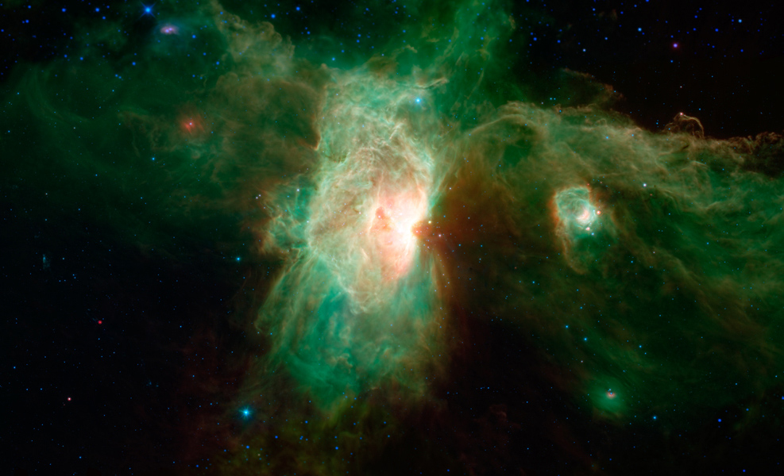
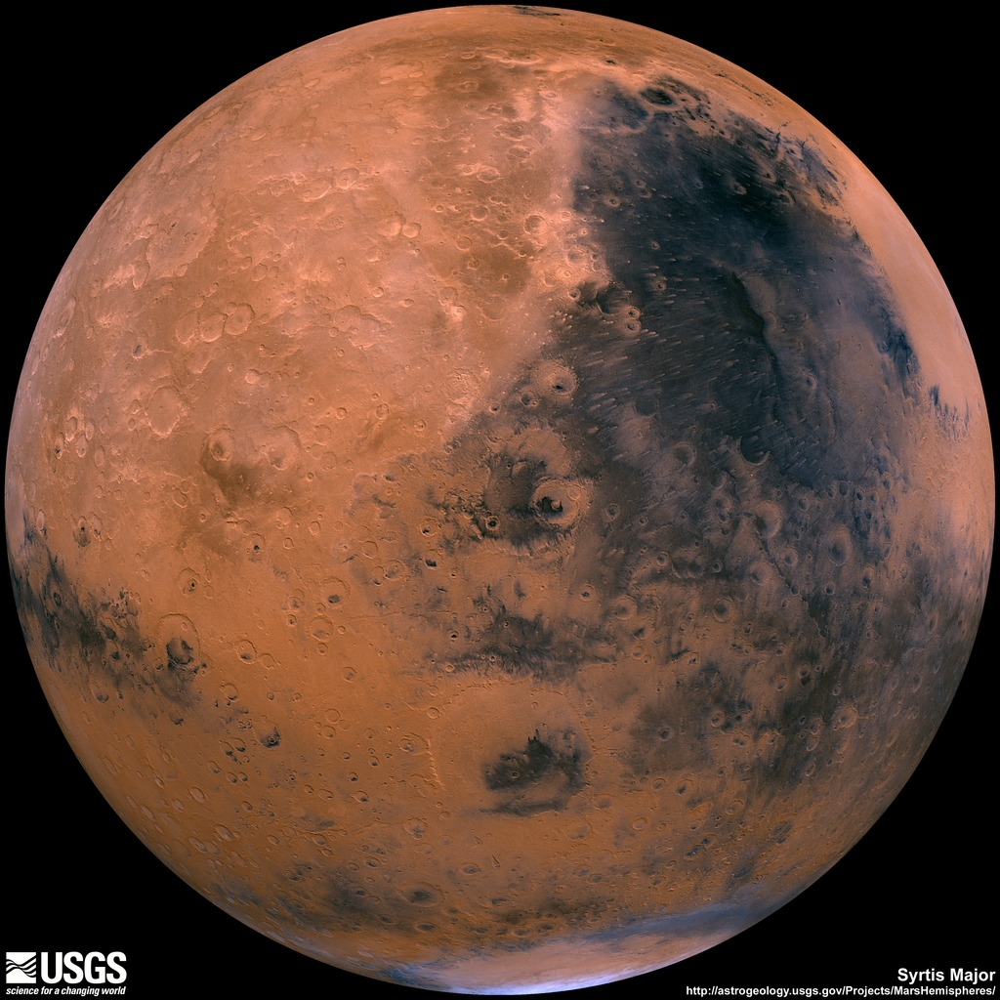

Mission to Mars
Latest Mars News
Mars InSight Lander's 'Mole' Pauses Digging
Featured Mars Image
Current Weather on Mars
InSight sol 99 (2019-03-07) low -95.8ºC (-140.4ºF) high -13.3ºC (8.1ºF) winds from the SW at 4.2 m/s (9.5 mph) gusting to 12.0 m/s (26.8 mph) pressure at 7.20 hPapic.twitter.com/XRi0faFSv5
Mars Facts
| Value | |
|---|---|
| Description | |
| Equatorial Diameter | 6,792 km |
| Polar Diameter | 6,752 km |
| Mass | 6.42 x 10^23 kg (10.7% Earth) |
| Moons | 2 (Phobos & Deimos) |
| Orbit Distance | 227,943,824 km (1.52 AU) |
| Orbit Period | 687 days (1.9 years) |
| Surface Temperature | -153 to 20 °C |
| First Record | 2nd millennium BC |
| Recorded By | Egyptian astronomers |
Mars Hemispheres

Cerberus Hemisphere Enhanced

Schiaparelli Hemisphere Enhanced

Syrtis Major Hemisphere Enhanced